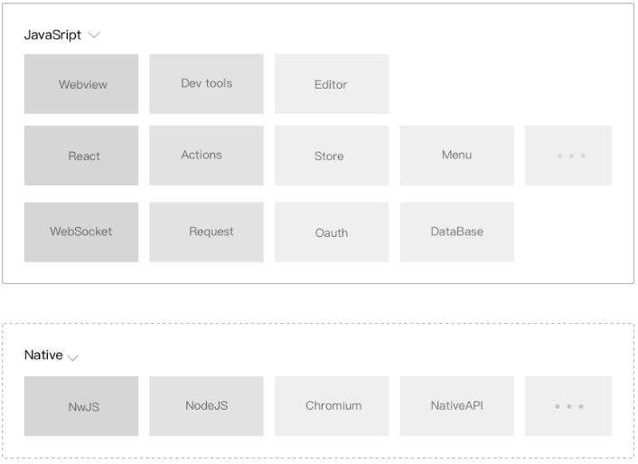

虽然在开发语言层面小程序与传统的网页差别不大：- 是使用JavaScript 脚本语言编写逻辑代码、
- 使用类似于HTML的WXML来描述页面的结构、
- 使用类似于CSS的WXSS来描述节点的样式，但是由于小程序渲染和逻辑分离的运行机制与传统的网页存在差异，所以无法使用传统的网页的开发调试工具，因此我们推出了小程序开发生态一站式IDE——微信开发者工具。开发者可以借助微信开发者工具完成小程序的代码开发、编译运行、界面和逻辑调试、真机预览和提交发布版本等功能。
图9-1 微信开发者工具
微信开发者工具是一个基于nw.js ，使用node.js、chromium以及系统API来实现底层模块，使用React、Redux等前端技术框架来搭建用户交互层，实现同一套代码跨Mac和Windows 平台使用。

图9-2 微信开发者工具底层框架
最后一次编辑于 2019年08月19日 （未经腾讯允许，不得转载）